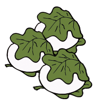

2013年5月号
なぜ柏の葉っぱなの？

屋根より高い鯉のぼり！？
端午の節句には「鯉のぼり」がつきものですが、最近はめっきり少なくなりましたね。
これも住環境や少子化の影響、またまた時代の流れ、ということなのでしょうか？
しかしながら端午の節句に直接関係のないご家庭でも「柏餅」を食べる方は多いのでは！
でもなぜ「柏餅」なのでしょうか？
そのまえに「端午」ってどういう意味なの？？と思っている人も多いはず。
「端午」の「端」は「端っこ」＝「初め」という意味があり、そして「午」は「五」に通じるということで、「五月の初め」ということです。
1つ目の疑問は解決しましたが、続く2つ目の「なぜ柏の葉っぱ」が端午の節句と関係あるのか？ということです。
確かに「桜餅」のように「桜の葉っぱ」は食べられるように工夫して使っているのに対し、柏の葉っぱは食べられないばかりか、なぜ使っているのか意味がよくわかりません！
実は「柏の葉っぱ」は、「新芽が出ないと古い葉っぱが落葉しない」という特徴があるのです。すなわち「子供が独り立ちするまでは親は頑張らなくてはいけない」⇒「家系を絶やさず守っていく」⇒「子孫繁栄」という縁起を担いだものなのです。
確かに柏の葉っぱ自体は食べられませんが、なかなか「美味い（うまい）」ことを考えたと思いませんか。座布団五枚ならぬ、「柏餅は五月」ってところでしょうか？！
とても気持ちの良い季節がやってきました！みなさんも新緑の五月を満喫しましょう！！
端午の節句には「鯉のぼり」がつきものですが、最近はめっきり少なくなりましたね。
これも住環境や少子化の影響、またまた時代の流れ、ということなのでしょうか？
しかしながら端午の節句に直接関係のないご家庭でも「柏餅」を食べる方は多いのでは！
でもなぜ「柏餅」なのでしょうか？
そのまえに「端午」ってどういう意味なの？？と思っている人も多いはず。
「端午」の「端」は「端っこ」＝「初め」という意味があり、そして「午」は「五」に通じるということで、「五月の初め」ということです。
1つ目の疑問は解決しましたが、続く2つ目の「なぜ柏の葉っぱ」が端午の節句と関係あるのか？ということです。
確かに「桜餅」のように「桜の葉っぱ」は食べられるように工夫して使っているのに対し、柏の葉っぱは食べられないばかりか、なぜ使っているのか意味がよくわかりません！
実は「柏の葉っぱ」は、「新芽が出ないと古い葉っぱが落葉しない」という特徴があるのです。すなわち「子供が独り立ちするまでは親は頑張らなくてはいけない」⇒「家系を絶やさず守っていく」⇒「子孫繁栄」という縁起を担いだものなのです。
確かに柏の葉っぱ自体は食べられませんが、なかなか「美味い（うまい）」ことを考えたと思いませんか。座布団五枚ならぬ、「柏餅は五月」ってところでしょうか？！
とても気持ちの良い季節がやってきました！みなさんも新緑の五月を満喫しましょう！！
 次月号へ
次月号へ